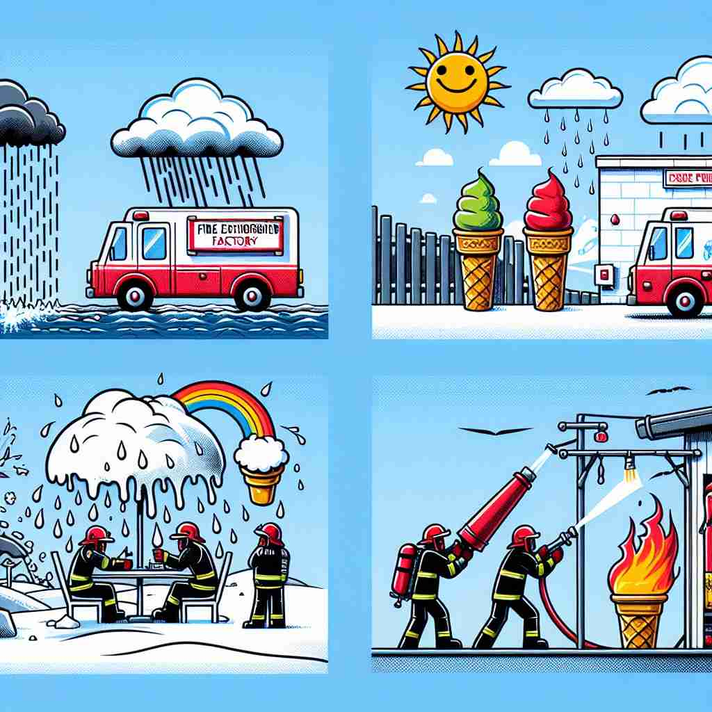

🗝️ n. a situation or statement characterized by a contrast between expectation and reality
🖼️ 想象一个计划中的野餐。大家期待着晴朗的天气，但当他们铺开野餐布时，却开始下起大雨。这种情况完美地呈现了期望与现实之间的反差——这就是'irony'。
🔍 理解'irony'的关键在于把握'对比'这个核心概念。无论是情况、语言表达还是文学技巧，'irony'总是涉及到预期与现实、表面与实质之间的反差或不一致。想象一个天平，一边是预期或表面意思，另一边是现实或实际意思，当这两者出现显著反差时，就产生了讽刺或反讽效果。这种思维方式可以帮助你更好地理解和记忆'irony'的各种用法。

💬 The irony of the situation is that the speaker says lies are the best policy, which contradicts what people expect from a leader.

💬 She is reflecting on the irony of the situation as she writes her notes.

💬 There is an irony of the situation; one man is wet while the other stays dry.

💬 The irony of the situation is that firefighters are trying to put out a fire on an ice cream cone while it is raining.
🗝️ n. the use of words to convey a meaning that is the opposite of its literal meaning
🖼️ 在一个幽默的对话中，朋友对迟到的朋友说：'你真准时啊！'这种用词直接与字面意思相反的方式就是'irony'的使用。
💬 His comment, 'What a lovely day!' as it poured with rain was an example of irony.
❓ 从期望与现实的对比延伸到字面意思与实际意思的对比
🗝️ n. a literary technique of indicating an intention or attitude opposite to what is actually stated
🖼️ 在小说中，一个充满自信的主人公不小心跌倒，旁白写到：'他以优雅的姿态重重摔在地上。'这样的写法使用的是'irony'的文学技巧。
💬 The author used irony to criticize society's values in his novel.
❓ 将对比概念应用于文学创作技巧
🗝️ n. incongruity between what might be expected and what actually occurs
🖼️ 在一场精心筹备的婚礼上，新娘的美丽裙摆不慎被咖啡溅湿，这种与幸福场景不符的意外就是'irony'的完美例子。
💬 The irony of the situation was that the fire station burned down.
❓ 强调期望与实际发生之间的不一致
🗝️ n. a state of affairs or an event that seems deliberately contrary to what one expects
🖼️ 一个环境保护大会上，全场使用的一次性塑料瓶就是一种'irony'——与参会初衷截然相反的情形。
💬 It was an irony that the peace conference was disrupted by violent protests.
❓ 将对比概念应用于事态或事件